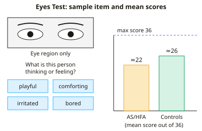

A-level Psychology Year 12 · Topic 9
Individual differences area: core studies
The individual differences area looks at why people differ in personality, thinking and mental health.
We will study Baron-Cohen's Eyes test, Griffiths on gamblers' thinking, Hancock on the language of psychopaths, Gould on the history of IQ testing, Thigpen and Cleckley's case of multiple personality, and Rosenhan on psychiatric diagnosis.
These studies also raise big questions about measurement, labels, and how fairly psychology treats people who are different.
- 8 subtopics
- 254 questions
- Free: 9.1 notes and 10 questions
In this topic
- 9.1Baron-Cohen et al. (2001) The Reading the Mind in the Eyes testFree below · 32 questions
- 9.2Griffiths (1994) Cognitive bias in fruit machine gamblersOpen in Full Marks · 37 questions
- 9.3Hancock et al. (2013) Language of psychopathsOpen in Full Marks · 38 questions
- 9.4Gould (1982) A Nation of Morons: IQ testing in the USAOpen in Full Marks · 34 questions
- 9.5Thigpen and Cleckley (1954) A case of multiple personalityOpen in Full Marks · 32 questions
- 9.6Rosenhan (1973) On being sane in insane placesOpen in Full Marks · 33 questions
- 9.7Freud (1909) Analysis of a phobia in a five-year-old boy: Little HansOpen in Full Marks · 22 questions
- 9.8Baron-Cohen et al. (1997) Another advanced test of theory of mindOpen in Full Marks · 26 questions
9.1 · Free notes
Baron-Cohen et al. (2001) The Reading the Mind in the Eyes test

Key points
- Aim: to test the revised Eyes Test as a measure of advanced theory of mind (the ability to infer mental states from the eyes) in adults with Asperger syndrome (AS) or high-functioning autism (HFA) compared with general-population controls.
- Theory of mind (ToM) is the ability to attribute thoughts, feelings and intentions to others. Autism spectrum conditions are linked to a ToM deficit. Adults with AS/HFA often pass basic false-belief tasks, so a more sensitive, advanced test was needed.
- The original (1997) test had only two answer options per item and suffered from floor/ceiling effects. The revision used 36 items, four options per item (one target and three foils) and added a glossary of mental-state words.
- Materials: 36 black-and-white photographs of the eye region only (from magazines), each with four mental-state words, plus a practice item. Each correct choice scores 1, so the maximum score is 36.
- Validity checks: a panel of judges checked that the target word was the best answer for each item. A gender recognition from the eyes task was a control, to show that any deficit was specific to mental-state inference and not to basic perception.
- Sample: Group 1 was 15 men with AS/HFA, recruited through adverts and support groups. Group 2 was 122 general-population adults (adult education classes and public library users), Group 3 was 103 Cambridge University students, and Group 4 was 14 general-population adults matched to Group 1 on IQ.
- Procedure: each person was tested individually, chose the one word that best described what the person in the photograph was thinking or feeling, and could use the glossary. The data were quantitative (scores out of 36).
- Results: the AS/HFA group scored a mean of about 22/36, significantly lower than controls at about 26/36. They did not differ on the gender recognition task.
- Conclusion: the revised Eyes Test is a valid measure of individual differences in ToM, and adults with AS/HFA show a specific impairment in advanced ToM. A low score is not a diagnosis by itself.
- Strengths: a standardised procedure, quantitative data that can be compared statistically, matched controls and large norms. Weaknesses: a small, mostly male AS/HFA sample, static eye photographs (low ecological validity), and culturally specific faces and vocabulary.
- Ethics: participants gave informed consent and could withdraw. Because AS/HFA participants may be vulnerable, researchers must avoid stigma and protect confidentiality.
In more detail
- Worked results: mean scores out of 36 were about 22 for the AS/HFA group, 26 for the general population, 28 for Cambridge students and 31 for the IQ-matched group.
- Sex difference: in the general population, women scored slightly higher than men on average, which fits Baron-Cohen's idea that autistic traits are an extreme form of a more typically male profile.
- AQ link: participants also completed the Autism Spectrum Quotient (AQ), and higher AQ scores went with lower Eyes test scores, so theory of mind varies across everyone, not only in autism.
- Why eyes only: showing only the eye region removes clues from the mouth and the rest of the face, making the task harder and better at picking up subtle differences in adults.
Practice
Baron-Cohen et al. (2001) The Reading the Mind in the Eyes test: 10 questions
Pick an answer to check it, or open the answer for the explanation.
1. What is the maximum score on the revised Eyes Test used by Baron-Cohen et al. (2001)?
- 36
- 40
- 72
- 25
Show answer
A: 36. The revised test had 36 photographs of the eye region, each scored 1 for choosing the target word, so the maximum is 36.
2. Why did Baron-Cohen et al. revise the original Eyes Test?
- It used moving video instead of photographs
- It had only two options per item and floor/ceiling effects
- It could not be scored numerically
- It could only be used with children
Show answer
B: It had only two options per item and floor/ceiling effects. The original had two choices per item and floor/ceiling effects. The revision used four options (target plus three foils), a glossary and 36 items.
3. Adults with AS/HFA did as well as controls at judging gender from the eyes. Why was this task included?
- To test their memory for faces
- To show they had no basic difficulty perceiving the eyes
- To measure their IQ
- To check their diagnosis was correct
Show answer
B: To show they had no basic difficulty perceiving the eyes. It was a control task. Equal performance suggests the AS/HFA deficit is specific to inferring mental states, not to basic perception of eyes.
4. A student scores 34/36. The general-population mean is about 26. What does this suggest?
- A score typical of the AS/HFA group
- A score well above average at recognising mental states
- A diagnosis of Asperger syndrome
- An invalid result as it exceeds the norm
Show answer
B: A score well above average at recognising mental states. 34 is far above the general mean of about 26, indicating very good mental-state recognition. High scores are valid and are not diagnostic of AS.
5. Control mean = 26.2 and AS/HFA mean = 21.9. A participant scores 18. How far below the control mean is this score?
- 8.2 points
- 4.3 points
- 3.9 points
- 18.0 points
Show answer
A: 8.2 points. 26.2 − 18 = 8.2 points below the control mean. The 4.3 difference is between the two group means, not this participant.
6. Which is a limitation of the AS/HFA sample in this study?
- It was very large and all female
- It contained only children
- It was only 15 people, 13 of them male
- It had no comparison group
Show answer
C: It was only 15 people, 13 of them male. Only 15 people took part and 13 were male, so findings may not generalise to females with AS/HFA. Control groups were included.
7. Which statement about the findings is correct?
- The AS/HFA group scored significantly lower than age-matched controls
- Controls scored at chance level
- There was no difference between the groups
- The AS/HFA group scored higher than controls
Show answer
A: The AS/HFA group scored significantly lower than age-matched controls. AS/HFA adults had a mean of about 22 against about 26 for controls, a significant difference, supporting an advanced ToM deficit.
8. Which is the best criticism of the study's ecological validity?
- Static photographs of eyes lack the context of real social interaction
- Participants were tested in a natural setting
- The data were qualitative and subjective
- The sample was too varied
Show answer
A: Static photographs of eyes lack the context of real social interaction. Real mental-state reading uses voice, body and context, not still pictures of the eyes alone, so the task is artificial.
9. What does the revised Eyes Test aim to measure?
- Intelligence quotient
- Ability to infer mental states from the eyes (advanced theory of mind)
- Recognition of basic emotions in whole faces only
- Memory for faces
Show answer
B: Ability to infer mental states from the eyes (advanced theory of mind). Participants judge what someone is thinking or feeling from the eye region alone, which taps advanced theory of mind and social sensitivity.
10. Why was a glossary of the mental-state words provided?
- To give hints about the correct answers
- To avoid word meaning confounding the results
- To increase the number of items
- To disguise the aim
Show answer
B: To avoid word meaning confounding the results. Some words are uncommon. Defining them means a low score reflects difficulty reading mental states, not poor vocabulary (a confounding variable).
Keep going in Full Marks
Full Marks has 32 questions on Baron-Cohen et al. (2001) The Reading the Mind in the Eyes test (22 more than here), set out in practice levels. You also get notes and 3D models for all 8 subtopics of Individual differences area: core studies, plus games, timed exams and past papers.
On your exam board
- OCRTopic 7: Individual differences area: core studies, Topic X: Wider reading: more classic studies
- CambridgeTopic 3: The cognitive approach
Not in the AQA and Edexcel specifications.